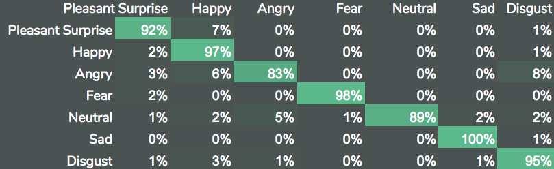

But first, let's see a demo
Record a short sentence trying to portray an emotion. You can say anything you want. The classifier will look only at your tone and inflection, not the words you choose to say.
Was your emotion correctly?
Sample Audio Segments
64 Year Old, Disgust
26 Year Old, Happy
Data
This model was trained on the Toronto Emotional Speech Set
Two female actresses, ages 26 and 64, were asked to say the sentence "Say the word ____" for a variety of words while trying to convey a particular emotion. There are 2800 total sentences in the dataset.
There are 7 emotions: Happy, Sad, Angry, Disgust, Neutral, Pleasant Surprise, and Fear.
There was an even distribution of samples across all 6 classes in the dataset.
Model
Sequence classification with bidirectional LSTM layers
The model used two bi-directional LSTM layers. For sequence classification problems, bi-directional LSTM has shown an advantage over standard LSTM layers as [3].
This model is based off the architecture presented in [1].
Validation Results
Overall Accuracy: 93%
Overall F1: 93%
Confusion Matrix
Concluding Thoughts
Not a bad start, but most people don't talk like this. Where the model had trouble.
Future Work
Sequence to sequence
References
[1] Chernykh, Vladimir, Grigoriy Sterling, and Pavel Prihodko.
"Emotion recognition from speech with recurrent neural networks."
arXiv preprint arXiv:1701.08071 (2017).
[2] Dupuis, Kate M., Pichora-Fuller Kathleen.
Toronto emotional speech set (TESS).
https://tspace.library.utoronto.ca/handle/1807/24487 (2010).
[3] Graves, Alex, Abdel-rahman Mohamed, and Geoffrey Hinton.
"Speech recognition with deep recurrent neural networks."
Acoustics, speech and signal processing IEEE, (2013).